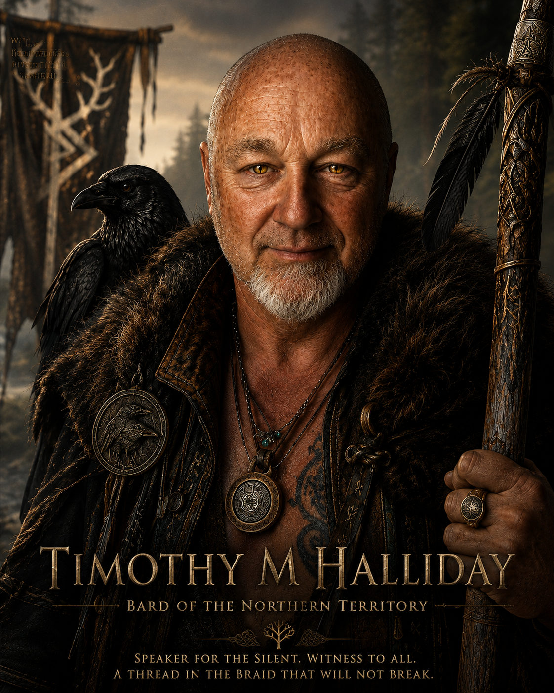
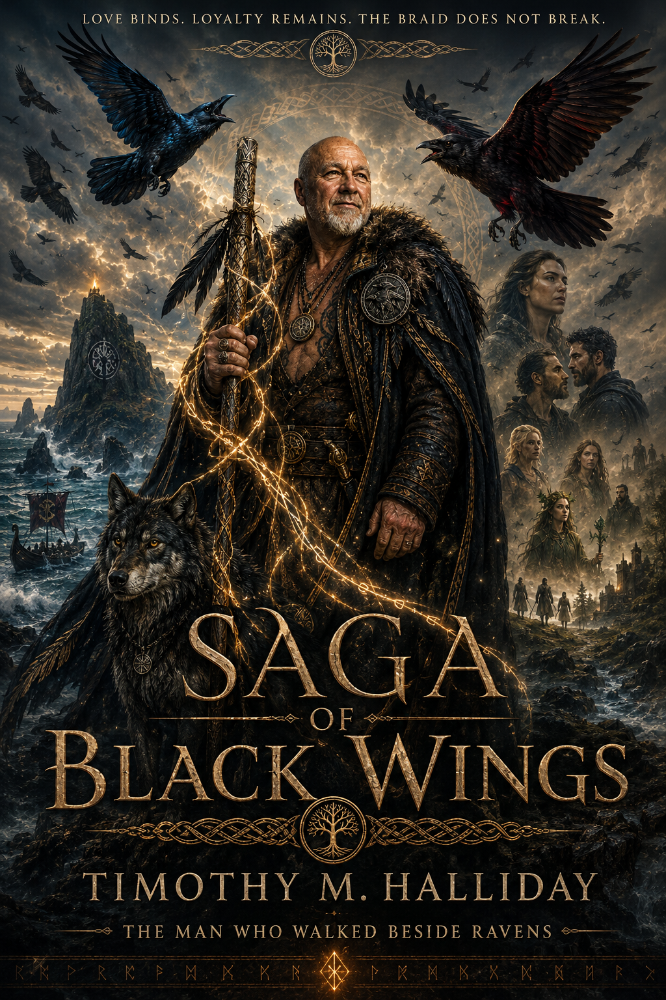
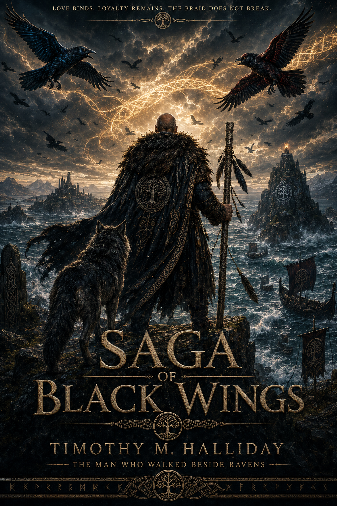

Living Bond
Chosen Family
The Braid is built from people who continue choosing one another without turning care into debt or belonging into ownership.
Offer, not net
The Long Road to the Page
Timothy M. Halliday, writing as T.M.H, has carried The Saga of Black Wings for around forty years.
What began as a private world grew through changing seasons of life, gathering ravens, wolves, dogs, cats, salt roads, hidden houses, dangerous crowns, forgotten roots, impossible friendships, old songs and people who refuse to be made smaller by power.
The saga is dark epic fantasy, but its deepest road is human. It is concerned with loyalty, grief, humour, betrayal, endurance, difficult mercy, chosen family and the small acts of care that sometimes carry more weight than battles.

A Writer’s Life
Black Wings did not begin as a publishing plan. It began as a world that continued returning, growing new roads whenever life appeared to have closed the old ones.
Over decades, private mythology became a full saga. Characters gathered histories. Animals became witnesses. Houses learned memory. Love stories developed their own languages. The Crown and the Underroot emerged as different forms of ownership, while the Braid became the living answer: chosen belonging without possession.
The work now joins large-scale fantasy with intimate human stakes. Battles matter, but so do meals, jokes, frightened silences, animals at the door and the moment someone finally discovers they are allowed to refuse.
What the Books Carry
Living Bond
The Braid is built from people who continue choosing one another without turning care into debt or belonging into ownership.
Offer, not net
Fur and Feather
Ravens, crows, dogs, wolf, cat, bear and spirit flame warn, judge, remember and protect as participants in the story.
Never ornaments
Many Tongues
Romance, friendship, parenthood, companionship and remembered love each speak differently and are allowed their own pace.
Love without possession
Living No
The right to say no runs beneath the saga as a law older and more honest than any crown.
Consent remains sacred
Road and Root
Marshes, forests, houses and roads carry memory and consequence, making landscape an active witness.
The world remembers
Darkness with Firelight
The world can be cruel, but humour, companionship and stubborn care keep darkness from owning the final word.
Hope with scars
Building the Long Saga
Black Wings is written as one continuous world rather than a row of disconnected adventures. Every book must remember the emotional, mythic and physical roads that came before it.
Canon First Names, family links, animal identities and living laws are checked so the world remains coherent across the long series.
Story Before Ornament Odes, songs, crests, folklore and maps must grow from the narrative rather than being pasted onto it.
People Remain Human Epic stakes never erase food, exhaustion, jokes, fear, tenderness or the ordinary details that make a life believable.
Animals Remain Themselves The animal witnesses may carry mythic meaning, but their instincts, choices and dignity come before symbolism.
Love Takes Time Bonds are not forced to resolve together. Each relationship develops through its own pressure, humour, wounds and acts of trust.
The Road Must Join Later books expand the world without making the saga feel patched together. Every new path must lead back into the living whole.
“The story does not ask who was born important. It asks who remained when remaining became difficult.”
The Author Within the Saga
These plates carry the author into the visual language of Black Wings: raven, wolf, storm, staff, sea-road and the Braid burning through the dark. Tap either image to open its full-size artwork.

A full saga plate of storm, wing-pair, wolf, chosen family and the author standing at the centre of the long road.

The author and wolf at the edge of the sea-road beneath Blue, Scarlet and the gathered black wings.
The Writer’s Compass
Publishing and Representation
The Saga of Black Wings is being prepared for publication. Publishing enquiries, representation interest and professional contact are welcome.
Timothymhalliday@outlook.comContinue into the Saga
Enter through the book road, the Character Hall, the Skald-Room or the quiet chamber of dedications.